Primary Metric
0.5878 AP
+0.1033 vs 64-shot
Full-data LoRA training from a BSDS EMA-initialized checkpoint on synthetic Perlin-stitched textures, evaluated on RWTD val.
milestoneedge detectionLoRA Cfull train
Run: bsds_to_synthperlin_lora_full_ema_init (reported on 2026-03-12)
What was done: LoRA Preset C full-data adaptation on synthetic Perlin-stitched data from a BSDS EMA-unwrapped checkpoint, then RWTD val evaluation.
Key change: Full training (4000 steps, rank=128, alpha=128) instead of few-shot; EMA initialization instead of raw checkpoint.
What improved: AP jumped from 0.4845 (64-shot) to 0.5878 (+0.1033), with ODS/OIS following.
Where it fails: Some low-contrast texture boundaries remain noisy; precision/recall balance suggests room for threshold tuning.
Comparison against the 64-shot synthetic and zero-shot baselines.
| Run | AP | ODS F1 | OIS F1 | Delta AP vs zero-shot |
|---|---|---|---|---|
| Zero-shot (synthetic baseline) | 0.4133 | 0.5920 | 0.5940 | +0.0000 |
| 64-shot LoRA C | 0.4845 | 0.6540 | 0.6547 | +0.0712 |
| This run (full EMA init) | 0.5878 | 0.6630 | 0.6920 | +0.1745 |
Representative samples from RWTD val. Use sort to reorder by performance proxy (sample ID). Click any image to enlarge.
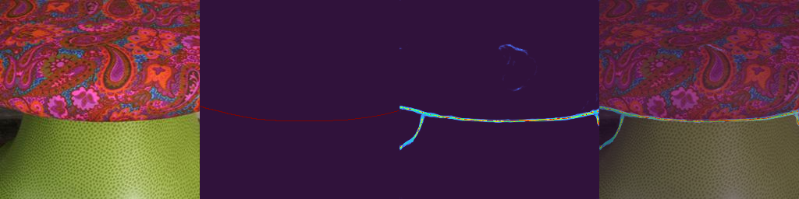
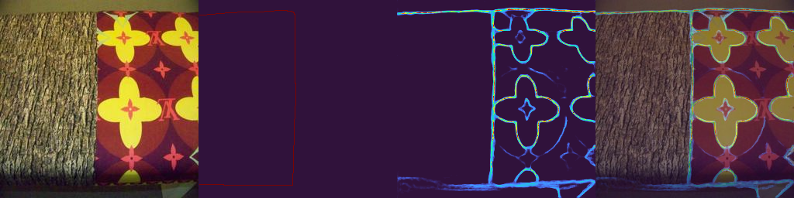
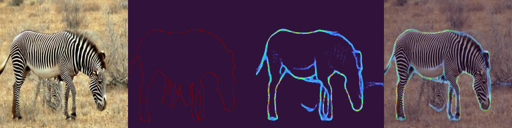
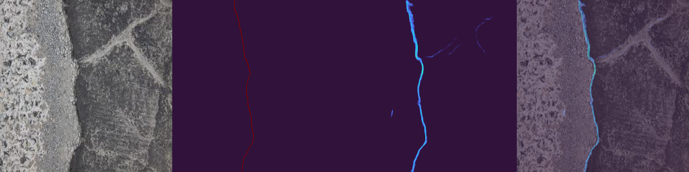
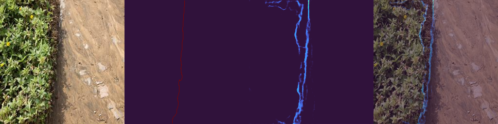
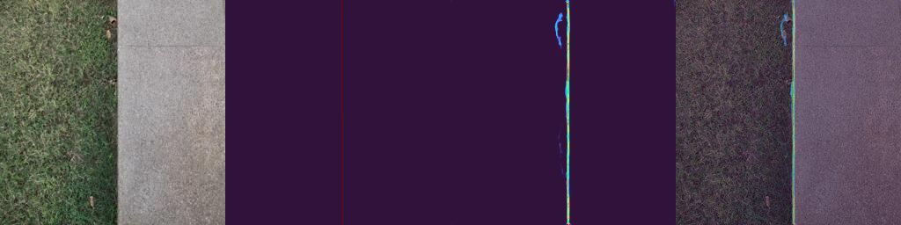
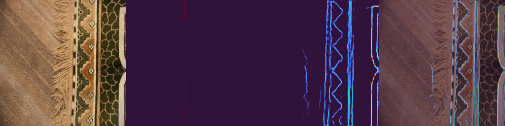
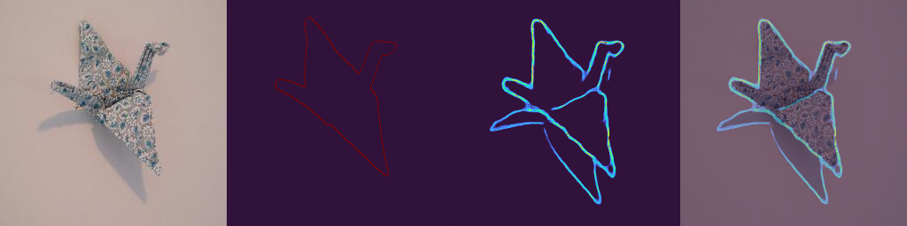
Comparison cards showing progression from baseline to this run on fixed samples.
Strong boundary detection on typical RWTD textures — clean contours with good precision.
Previews from diverse RWTD textures showing generalization quality.
Side-by-side of a clean result vs a borderline case for quality confidence.
Samples where edge detection struggles with low-contrast or cluttered textures.
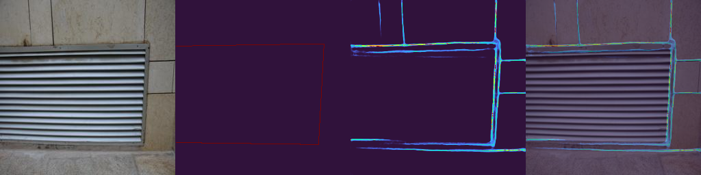
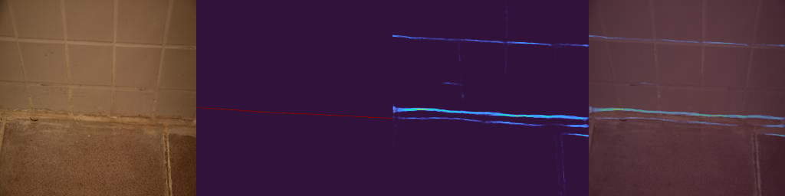
Failure cases and suspicious samples. At least one failure is included per contract.
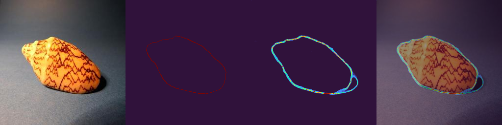
Trust boundary: AP improvement is strong (+0.1033 vs 64-shot), but precision–recall balance at individual-texture level needs per-sample review.
Date: 2026-03-12
Git commit: f306ae7
Author: nadavo11
Task: diffedge_bsds_to_synth_perlin_lora_stage1 / edge detection
Model/checkpoint: DiffusionEdge + LoRA C / bsds_ema_unwrapped.pt
Repro files: repro/config.yaml, repro/command.txt, repro/env.txt
| Full outputs | experiments/bsds_to_synthperlin_lora_full_ema_init/eval/ |
|---|---|
| Run config | experiments/bsds_to_synthperlin_lora_full_ema_init/run_config.yaml |
| Eval config | experiments/bsds_to_synthperlin_lora_full_ema_init/resolved_eval_cfg.yaml |
| Checkpoint | experiments/bsds_to_synthperlin_lora_full_ema_init/train_artifacts/ |